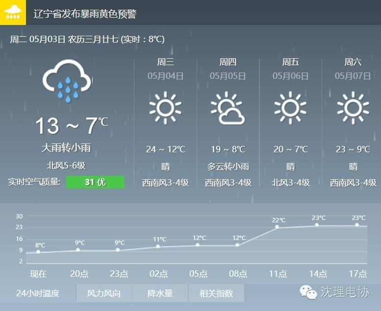

沈阳发暴雨大风双预警
五一开学第一天，竟然是这种天气，果然今天不适合开学。心塞。小编特别提醒大家出门记得带伞，并且天气降温6-8℃，注意保暖，避免感冒！

3日降雨模式继续，气象部门预计从2日晚间到今天半天，沈阳将出现大雨到暴雨，最低气温8℃，最高气温17℃。截至5月3日早7时，沈阳城区已降水21.3mm，紧随其后的辽中已降水19.1m，法库县降水18.5mm，苏家屯区降水17.1mm，沈北新区降水16.1mm，新民市降水13.1mm，位于最北部的康平县降水最少为3.9mm。在沈阳城区内，浑南降雨最多，仅今早6时到7时的一个小时内，浑南一小监测点位与奥体中心监测点位的累计雨量均已达到了11mm。
编/高天